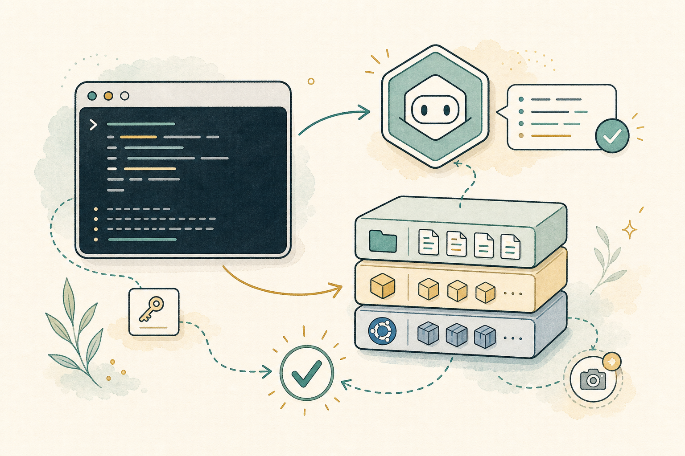
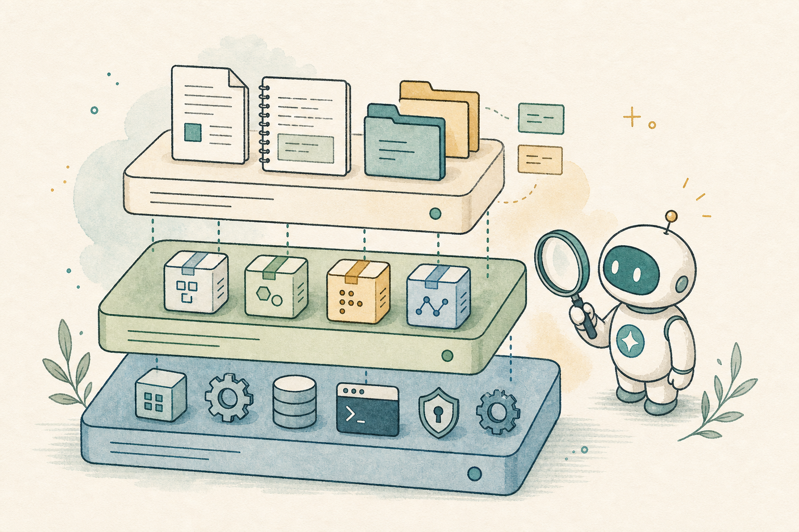
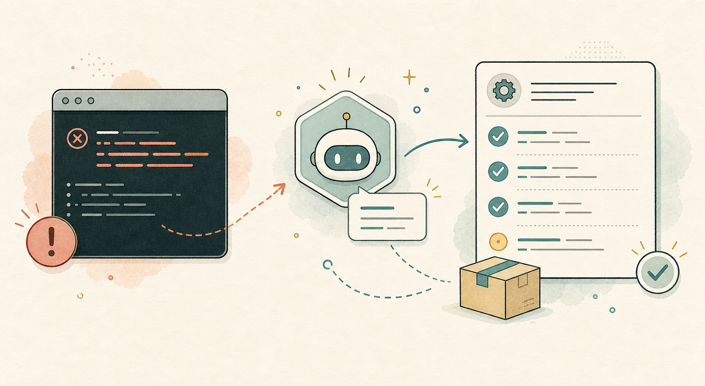
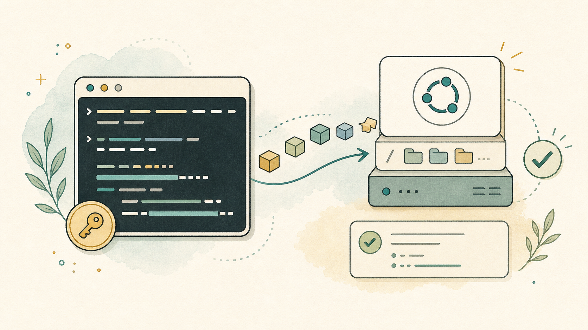
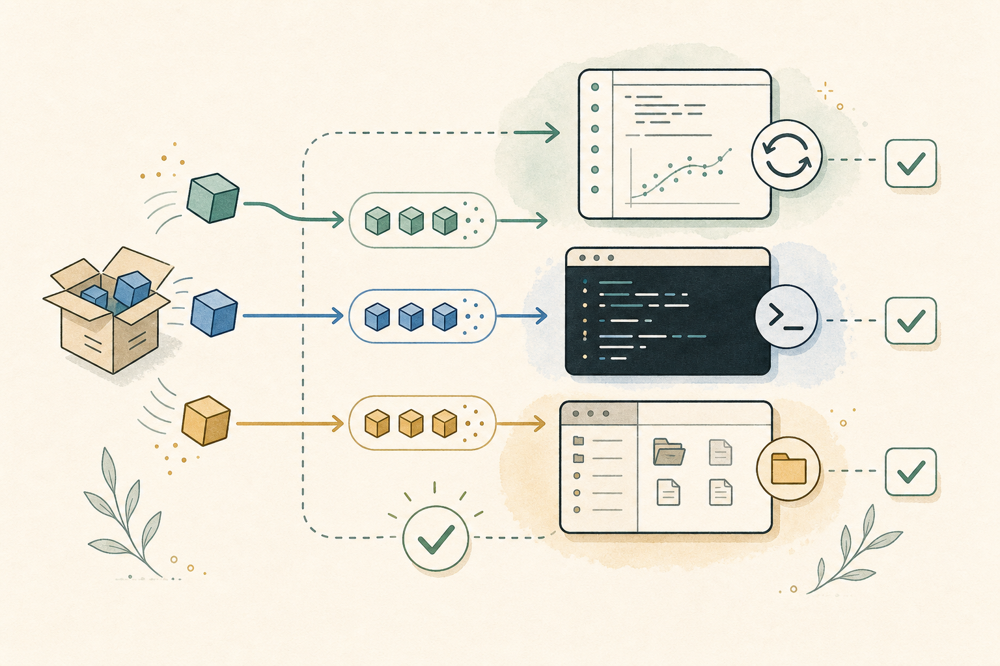

A CoCalc-AI field guide for working researchers
Installing Software in CoCalc-AI
Your project is a real Linux environment. When a command, library, or notebook dependency is missing, Codex can help you install it, verify it, and leave behind a reproducible trail that collaborators can inspect.

This guide follows one ordinary moment: you open a notebook, terminal,
or project file, and something is missing. Maybe Python cannot import
a package. Maybe a build script needs graphviz. Maybe a
LaTeX document needs a system tool.
In CoCalc-AI, that is not a dead end. You have a Linux environment, a
terminal, root access through sudo, and an agent that is
very good at reading error messages and turning them into checked
commands.
The unusual part is that this environment is collaborative. Terminal sessions, notebooks, files, chat, and Codex threads can all be shared live, so installing software becomes a project activity rather than a private ritual on one machine.
Know the layers
Software usually belongs in one of three places. Project files live beside your work. Language packages belong to Python, R, Node, TeX, or another toolchain. System packages live in the Ubuntu root filesystem.
Most install confusion comes from putting the right thing in the wrong layer.

Start with the error
The best install request includes the exact failure. Do not begin with “install some stuff.” Begin with what broke.
This notebook cell says ModuleNotFoundError: graphviz.
Please install what is needed, rerun a tiny verification, and tell
me what changed.
Codex can inspect the terminal output, try the smallest fix, and verify the result before calling it done.

Use apt for system tools
CoCalc-AI projects run in an Ubuntu environment. If you need a command-line tool or system library, the basic pattern is:
sudo apt-get update
sudo apt-get install -y graphviz
dot -VThe first line refreshes the package index. The second installs the package. The third proves the command exists.

Install language packages where the code runs
Python packages usually come from pip or
conda. Node packages come from npm or
pnpm. R packages come from R. TeX packages come from
TeX Live or system packages.
Notebooks add one extra wrinkle: the terminal and the notebook kernel must be using the same environment. If an import still fails, restart the kernel or ask Codex to check which Python the notebook is actually using.

Use Codex as the installer, not the oracle
Paste the error or ask Codex to read the shared terminal history.
Prefer the smallest package set that explains the error.
Run --version, import the module, or rerun the cell.
Keep a short SETUP.md or setup script in the project.
Use snapshots as a safety net
Most installs are routine. Some are not. CoCalc-AI snapshots and backups give you a useful escape hatch: you can snapshot the whole container, including the root filesystem, before a risky change.
That means system-level experimentation does not have to feel permanent. If an install badly changes the environment, the root filesystem can be restored to an earlier version.
The real skill is knowing what changed
Installing software is not just making the error disappear. The good workflow is: diagnose, install, verify, document, and keep a way back.
CoCalc-AI works well here because the terminal, files, notebooks, snapshots, chat, and Codex all live in the same realtime collaborative project. The environment is not a black box; it is something a team can inspect and improve together.